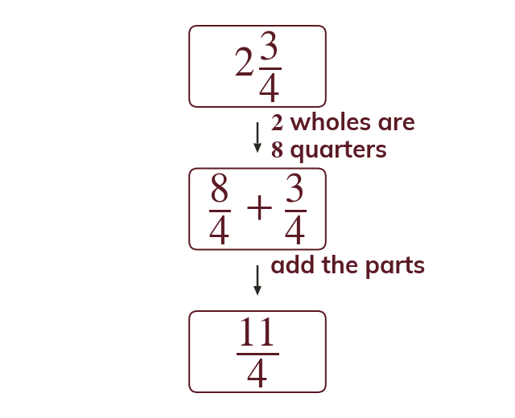
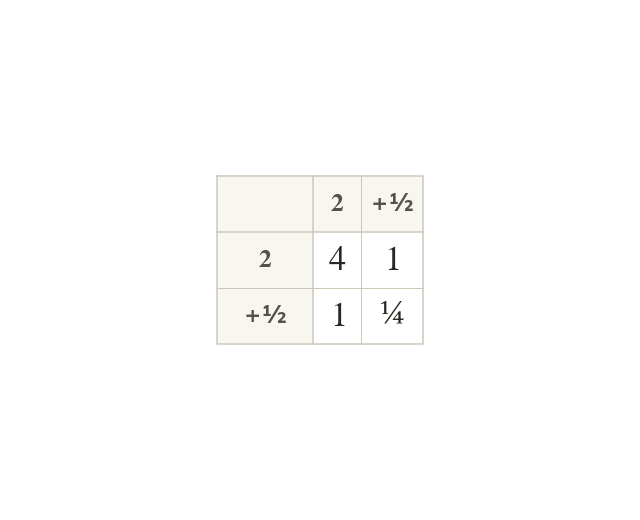
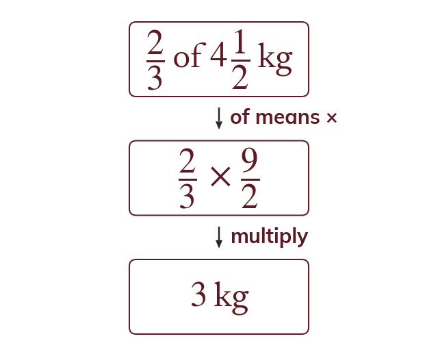
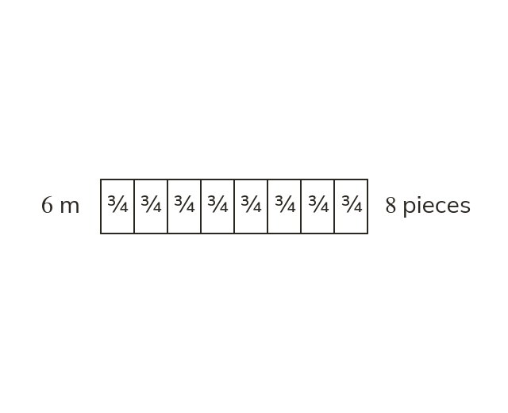

Convert first
Convert mixed numbers to improper fractions before multiplying or dividing.
Mixed numbers are converted to improper fractions before multiplying or dividing. Each whole is one denominator's worth of parts, so
Recipes, fabric and timber are measured in mixed numbers, and scaling them means multiplying and dividing. Converting to improper fractions first makes every case the same method.
Work down the page at your own pace. Write every answer in your book first, then click to check it.
Read each card, then follow the worked examples one step at a time.

Convert mixed numbers to improper fractions before multiplying or dividing.

Don't multiply the wholes and the fractions separately. is not
The cross products would be missed.
Pick an answer. If it's wrong, the feedback tells you which mistake it was.
Read each card, then follow the worked examples one step at a time.

A fraction of a quantity means multiply, even for a mixed number. of kg kg.

Dividing by a fraction asks how many pieces of that size fit. So because eight pieces of m make m.
Pick an answer. If it's wrong, the feedback tells you which mistake it was.
Finished? Next lesson: 8.15.3 Algebraic Fractions.
Log in, then search for a code to practise that skill.
Videos, worksheets and more on each part of this lesson.